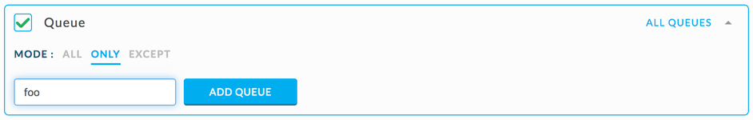
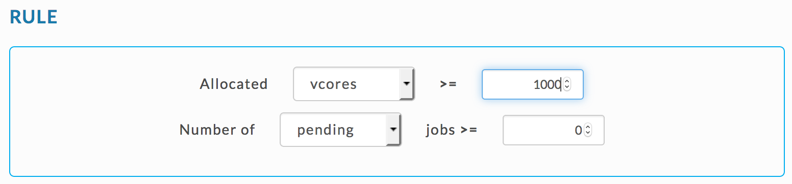
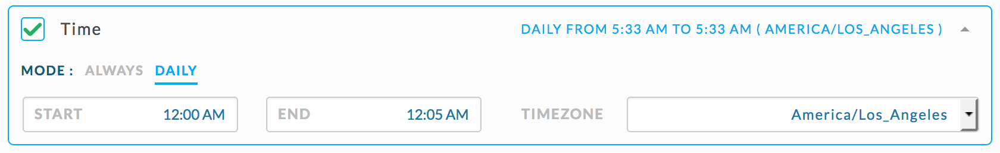
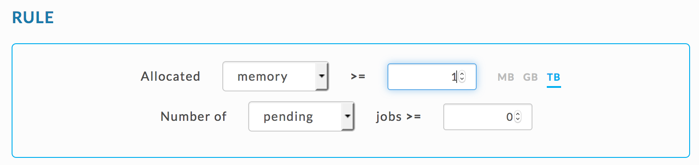
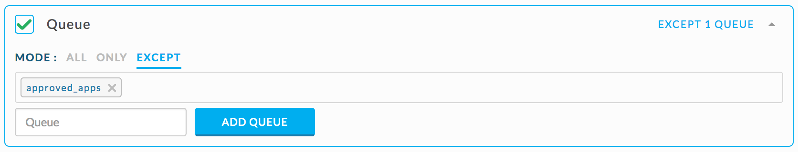
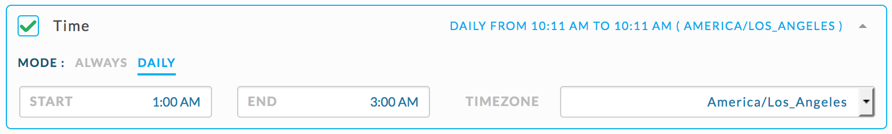
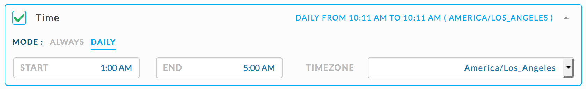
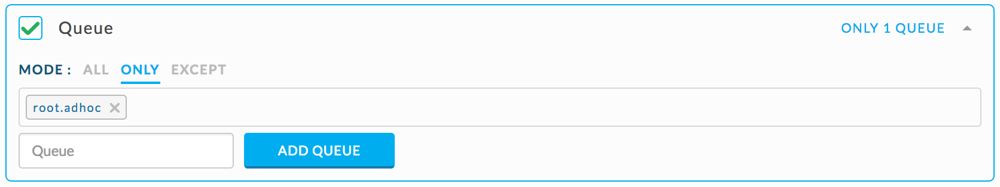
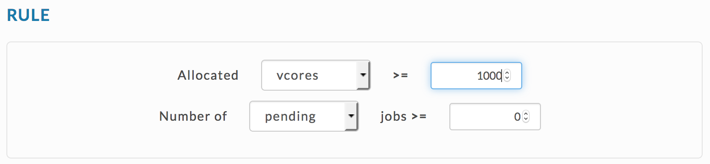

Sample Auto Actions
Supported cluster metrics
AutoActions by default collect metrics from the YARN Resource Manager and MapReduce Application Master for all applications running (or submitted) on the target cluster. MapReduce Application Master also maintains various counter. Users can use these metrics and the counters when defining Auto Actions rule. Additionally there are Hive/Workflow and Spark metrics which can used to define Auto Actions rules.
Note
Monitoring is performed on:
"live" running applications allowing to take proactive actions when violations are detected, and
on MapReduce AM metrics only when the user specifies a rule requiring the polling/aggregation of a metric.
appCount - total number of applications
elapsedTime - total elapsed time of containers in milliseconds
allocatedMB - sum of memory in MB allocated to containers
allocatedVCores - sum of virtual cores allocated to containers
runningContainers - number of containers currently running
memorySeconds - amount of allocated memory in MB-seconds
vcoreSeconds - amount of allocated CPU resources in virtual core-seconds
For more details see:https://hadoop.apache.org/docs/r2.7.3/hadoop-yarn/hadoop-yarn-site/ResourceManagerRest.html#Cluster_Applications_API
elapsedAppTime - time since the application was started in milliseconds
mapsCompleted - number of completed maps
reducesTotal - total number of reduces
reducesCompleted - number of completed reduces
mapsPending - number of maps still to be run
mapsRunning - number of running maps
reducesPending - number of reduces still to be run
reducesRunning - number of running reduces
newReduceAttempts - number of new reduce attempts
runningReduceAttempts - number of running reduce attempts
failedReduceAttempts - number of failed reduce attempts
killedReduceAttempts - number of killed reduce attempts
successfulReduceAttempts - number of successful reduce attempts
newMapAttempts - number of new map attempts
runningMapAttempts - number of running map attempts
failedMapAttempts - number of failed map attempts
killedMapAttempts - number of killed map attempts
successfulMapAttempts - number of successful map attempts
For more details see:https://hadoop.apache.org/docs/r2.7.3/hadoop-mapreduce-client/hadoop-mapreduce-client-core/MapredAppMasterRest.html#Jobs_API
Shuffle Errors
badId - total number of errors related with the interpretations of IDs from shuffle headers
connection - total number of established network connections
ioError - total number of errors related with reading and writing intermediate data
wrongLength - total number of errors related to compression and decompression of intermediate data
wrongMap - total number of errors related to duplication of the mapper output data
wrongReduce - total number of errors related to the attempts of shuffling data for wrong reducer
File System Counters
fileBytesRead - mount of data read from local file system
fileBytesWritten - amount of data written to local file system
fileReadOps - number of read operations from local file system
fileLargeReadOps - number of read operations of large files from local file system
fileWriteOps - number of write operations from local file system
hdfsBytesRead - amount of data read from HDFS
hdfsBytesWritten - amount of data written to HDFS
hdfsReadOps - number of read operations from HDFS
hdfsLargeReadOps - number of read operations of large files from HDFS
hdfsWriteOps - number of write operations to HDFS
Map-Reduce Framework Counters
mapInputRecords - total number of records processed by all of the mappers
mapOutputRecords - total number of records produced by by all of the mappers
mapOutputBytes - total amount of (uncompressed) data produced by mappers
mapOutputMaterializedBytes - amount of (compressed) data which was actually written to disk
splitRawBytes - amount of data consumed for metadata representation during splits
combineInputRecords - total number of records processed by combiners
combineOutputRecords - total number of records produced by combiners
reduceInputGroups - total number of unique keys
reduceShuffleBytes - of data processed in shuffle and reduce phase
reduceInputRecords - total number of records processed by all reducers
reduceOutputRecords - total number of records produced by all reducers
spilledRecords - total number of map and reduce records that were spilled to disk
shuffledMaps - total number of mappers which undergone through shuffle phase
failedShuffle - total number of mappers which failed to undergo through shuffle phase
mergedMapOutputs - total number of mapper output files undergone through shuffle phase
gcTimeMillis - wall time spent in Java Garbage Collection
cpuMilliseconds - cumulative CPU time for all tasks
physicalMemoryBytes - total physical memory used by all tasks including spilled data
virtualMemoryBytes - total virtual memory used by all tasks
committedHeapBytes - total amount of memory available for JVM
Job Counters
totalLaunchedMaps - total number of launched map tasks
totalLaunchedReduces - total number of launched reduce tasks
dataLocalMaps - number of map tasks which were launched on the nodes containing required data
slotsMillisMaps - total time spent by all executing maps in occupied slots
slotsMillisReduces - total time spent by all executing reduces in occupied slots
millisMaps - total time spent by all map tasks
millisReduces - total time spent by all reduce tasks
vcoresMillisMaps - total vcore-seconds taken by all map tasks
vcoresMillisReduces - total vcore-seconds taken by all reduce tasks
mbMillisMaps - total megabyte-seconds taken by all map tasks
mbMillisReduces - total megabyte-seconds taken by all reduce tasks
File Input Format Counters
bytesRead - amount of data read by every tasks for every filesystem
File Output Format Counters
bytesWritten - amount of data written by every tasks for every filesystem
For more details see:https://hadoop.apache.org/docs/r2.7.3/hadoop-mapreduce-client/hadoop-mapreduce-client-core/MapredAppMasterRest.html#Job_Counters_API
In addition to the metric set supported by MapReduce applications, Spark application, Spark applications can be polled on:
inputRecords
outputRecords
outputToInputRecordsRatio
totalJoinInputRowCount
totalJoinOutputRowCount
inputPartitions
outputPartitions
duration - total time taken by the application
totalDfsBytesRead
totalDfsBytesWritten
Information on Demo Auto Actions can be found here.
Sample JSON rules
Unless otherwise noted, all JSON rules are entered into the Rule Box in the Expert Mode template.
Alert Examples Alert if Hive query duration > 10 minutes { "scope": "multi_app", "user_metric": "duration", "type": "HIVE", "state": "RUNNING", "compare": ">", "value": 600000 }Alert if Tez query duration > 10 minutes { "scope": "multi_app", "user_metric": "duration", "type": "TEZ", "state": "RUNNING", "compare": ">", "value": 600000 }Alert if any workflow's duration > 20 minutes { "scope": "multi_app", "type": "WORKFLOW", "state": "RUNNING", "user_metric": "duration", "compare": ">", "value": 1200000 }Alert if workflow named “foo” and duration > 10 minutes { "scope":"by_name", "target":"foo", "type":"WORKFLOW", "state":"RUNNING", "user_metric":"duration", "compare":">", "value":600000 }Alert if workflow named “foo” and totalDfsBytesRead > 100 MB and duration > 20 minutes { "AND":[ { "scope":"by_name", "target":"foo", "type":"WORKFLOW", "user_metric":"duration", "compare":">", "value":1200000 }, { "scope":"by_name", "target":"foo", "type":"WORKFLOW", "user_metric":"totalDfsBytesRead", "compare":">", "value":104857600 } ] }Alert if Hive query in Queue “foo” and duration > 10 minutes { "scope": "multi_app", "type": "HIVE", "state": "RUNNING", "user_metric": "duration", "compare": ">", "value": 600000 }And select global rule condition Queue only “foo”:
 Kill App Example When workflow name is “prod_ml_model” and duration > 2h then kill jobs with allocated_vcores >= 20 and queue != ‘sla_queue’ In Rule Box enter:
{ "scope": "by_name", "target": "prod_ml_model", "type": "WORKFLOW", "user_metric": "duration", "compare": ">", "value": 7200000 }In Action Box enter:
{ "action": "kill_app", "max_vcores": 20, "not_in_queues": ["sla_queue"], "if_triggered": false }
Auto Actions Rules, Predefined Templates v Expert Mode
Auto actions demo package documentation ishere.
Predefined templates cover a variety of jobs, yet they can lack the specificity or complexity you need for monitoring.
For instance, you can use the Rogue Application template to determine if jobs are using to many memory or vcore resources by alerting for jobs using more than 1TB of memory. However, if you only want to know if only Map Reduce jobs are using > 1 TB, the template won't suffice. For such instances, you need to write your Auto Actions using the Expert Mode template with the rules and some actions written in JSON.
Below are a variety of Auto Action written using JSON.
Applications While applications in quarantine queue continue to run, the queue is preemptable and has a low resource allocation. If any other queue needs resources, it can preempt applications in the quarantine queue. Moving rogue applications to quarantine queue frees resources for other applications.
Alert for Rogue application - any application which is consuming a major portion of cluster resources. a. If any application (not sla bound) is consuming more than certain vcores/memory at midnight, move it to a quarantine queue You can use the Rogue Application template to specify vcores,
 or memory

Or the Expert Mode template and set JSON rule for vcores as
{ "scope": "multi_app", "metric": "allocated_vcores", "compare": ">", "value": 1000 }or as below for memory.
{ "scope": "multi_app", "metric": "allocated_mb", "compare": ">", "value": 1073741824 }Set Time rule condition as:
 Set Move app rule as:
b. If any app needing greater than X amount of resources has to approved, otherwise the app is moved to quarantine queue. You can use the Rogue Application template to specify vcores,

or memory
 Or use the Expert Mode template and set JSON rule as for scores
{ "scope": "multi_app", "metric": "allocated_vcores", "compare": ">", "value": [X] }or as below for memory.
{ "scope": "multi_app", "metric":"allocated_mb", "compare": ">", "value": [X] }Set Queue rule conditions as:
 Set Move app action as:

Hive Alert if a Hive query duration is running longer than expected. Check if a Hive query duration > 5 hours.
{ "scope": "multi_app", "type": "HIVE", "user_metric": "duration", "compare": ">", "value": 18000000 }Alert if SLA bound query is taking longer than expected. a. Check if a Hive query started between 1 am and 3 am in queue ‘prod’ runs longer than > 20 minutes. { "scope": "multi_app", "type": "HIVE", "user_metric": "duration", "compare": ">", "value": 1200000 }Set the rule conditions as shown.

b. Check if any Hive query is started between 1 am and 3 am in any queue except ‘prod’. { "scope": "multi_app", "type": "HIVE", "metric": "app_count", "compare": ">", "value": 0 }Set the rule conditions as shown.

 Alert if a Hive query has extensive I/O, wich may affect HDFS and other apps. a. Check if a Hive query writes out more than 100GB in total. { "scope": "multi_app", "type": "HIVE", "user_metric": "totalDfsBytesWritten", "compare": ">", "value": 107374182400 }b. Check if a Hive query reads in more than 100GB in total. { "scope": "multi_app", "type": "HIVE", "user_metric": "totalDfsBytesRead", "compare": ">", "value": 107374182400 }Detect inefficient and “stuck” Hive queries, i.e., alert if a Hive query has not read lots of data but running for a longer time. Check if any Hive query has read less than 10GB in total and its duration is longer than 1 hour.
{ "SAME":[ { "scope":"multi_app", "type":"HIVE", "user_metric":"duration", "compare":">", "value":3600000 }, { "scope":"multi_app", "type":"HIVE", "user_metric":"totalDfsBytesRead", "compare":"<", "value":10485760 } ] }Map Reduce  Alert on Map Reduce jobs using > 1 TB of memory. { "scope": "multi_app", "type": "MAPREDUCE", "metric": "allocated_mb", "compare": ">", "value": 1073741824 }Alert on Map Reduce jobs using > 1000 vcores. { "scope": "multi_app", "type": "MAPREDUCE", "metric": "allocated_vcores", "compare": ">", "value": 1000 }Alert on Map Reduce jobs running more than 1 hour. { "scope": "multi_app", "type": "MAPREDUCE", "metric": "elapsed_time", "compare": ">", "value": 3600000 }Alert on MapReduce jobs that may affect any production SLA jobs running on a cluster. Check for MapReduce jobs not in the SLA queue, running between 12 am and 3 am, and using > 1TB of memory.
Use the JSON rule specifying Map Reduce jobs using > 1 TB and set the rule conditions as shown.
Alert on ad-hoc MapReduce jobs use a majority of cluster resources which may impact the cluster performance. Check for MapReduce Jobs in the “root.adhocd” queue, running between 1 am and 5 am, and using > 1TB of memory.
Use the JSON rule specifying Map Reduce jobs using > 1 TB and set the rule conditions as shown.
 Queue Alert for Rogue Queue - Any queue consuming a major portion of cluster resources. a. Check for any queue where the allocated vcores aggregated over all its applications for any queue is > 1000. { "scope": "multi_queue", "metric": "allocated_vcores", "compare": ">", "value": 1000 }b. Check for any queue where the allocated memory aggregated over all its applications is > 1TB. { "scope": "multi_queue", "metric": "allocated_mb", "compare": ">", "value": 1073741824 }Spark The JSON rules to alert if a Spark application is grabbing majority of cluster resources are exactly like the Map Reduce rules for except SPARK is used for the "type".
Alert on only Spark jobs using > 1 TB of memory. { "scope": "multi_app", "type": "SPARK", "metric": "allocated_mb", "compare": ">", "value": 1073741824 }Alert on only Spark jobs using > 1000 vcores. { "scope": "multi_app", "type": "MAPREDUCE", "metric": "allocated_vcores", "compare": ">", "value": 1000 }Alert if a Spark SQL query has unbalanced input vs output, which may indicate inefficient or “rogue” queries. Check if any Spark application is generating lots of rows in comparison with input, i.e. ‘outputToInputRowRatio’ > 1000
{ "scope": "multi_app", "type": "SPARK", "user_metric": "outputToInputRowRatio", "compare": ">", "value": 1000 }Alert if a Spark SQL has lots of output partitions. Check if any Spark application ‘outputPartitions’ > 10000.
{ "scope": "multi_app", "type": "SPARK", "user_metric": "outputPartitions", "compare": ">", "value": 10000 }UserAlert for Rogue User - Any user consuming a major portion of cluster resources.
a. Check for any user where the allocated vcores aggregated over all their applications is > 1000.
You can use the Rouge User template
 or the JSON rule
{ "scope": "multi_user", "metric": "allocated_vcores", "compare": ">", "value": 1000 }b. Check for any user where the allocated memory aggregated over all their applications is > 1TB.
You can use the Rouge User template or the JSON rule
{ "scope": "multi_user", "metric": "allocated_mb", "compare": ">", "value": 1073741824 }Workflow Alert if a workflow is taking longer than expected. a. Check if any workflow is running for longer than 5 hours. { "scope": "multi_app", "type": "WORKFLOW", "user_metric": "duration", "compare": ">", "value": 18000000 }b. Check if a SLA bound workflow named ‘market_report’ is running for longer than 30 minutes. { "scope": "multi_app", "type": "WORKFLOW", "user_metric": "duration", "compare": ">", "value": 18000000 }Alert if a SLA bound workflow is reading more data than expected. Check if workflow named '‘market_report’' and 'totalDfsBytesRead' > 100G.
{ "scope": "by_name", "target": "market_report", "type": "WORKFLOW", "user_metric": "totalDfsBytesRead", "compare": ">", "value": 107374182400 }Alert if a SLA bound workflow is taking longer and kill bigger applications which are not run by the SLA user. Check if Workflow named ‘prod_ml_model’ and duration > 2h then kill jobs with allocated_vcores >= 20 and user != ‘sla_user'.
{ "scope": "by_name", "target": "prod_ml_model", "type": "WORKFLOW", "user_metric": "duration", "compare": ">", "value": 7200000 }Enter the following code in the Export Mode template's Action box.
{ "action": "kill_app", "max_vcores": 20, "not_in_queues": ["sla_queue"], "if_triggered": false }